A visual showcase of the Tecumseh Jujutsu Management System interface and features.
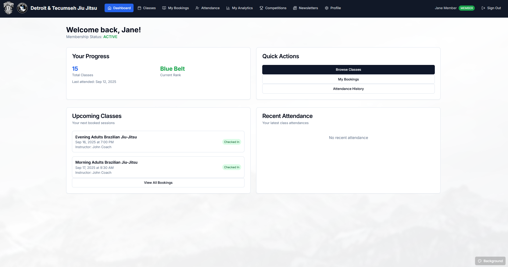 The main member dashboard showing personal progress, upcoming classes, and quick actions. Features belt rank tracking, attendance history, and easy access to class booking.
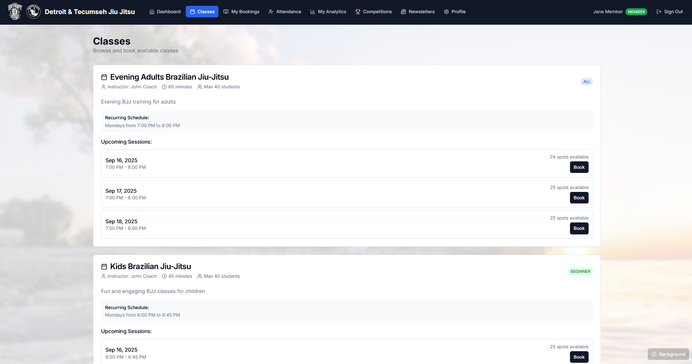 Class listing page showing available classes with skill levels, schedules, and real-time availability. Members can book classes directly with available spot counts.
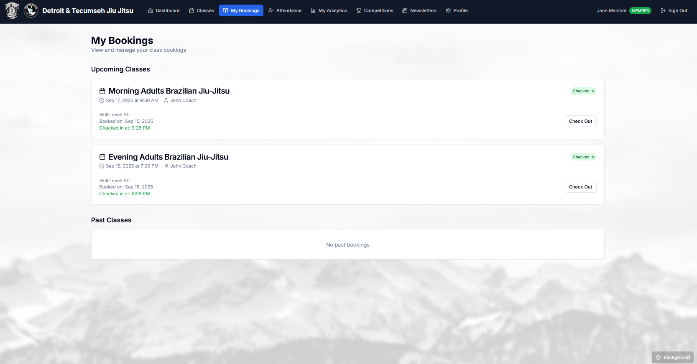 Class booking interface showing session details, instructor information, and booking confirmation flow.
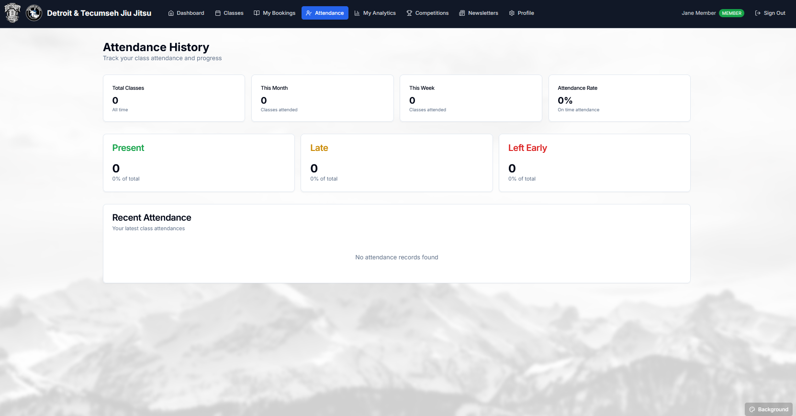 Personal booking management page where members can view upcoming classes, check-in status, and manage their reservations.
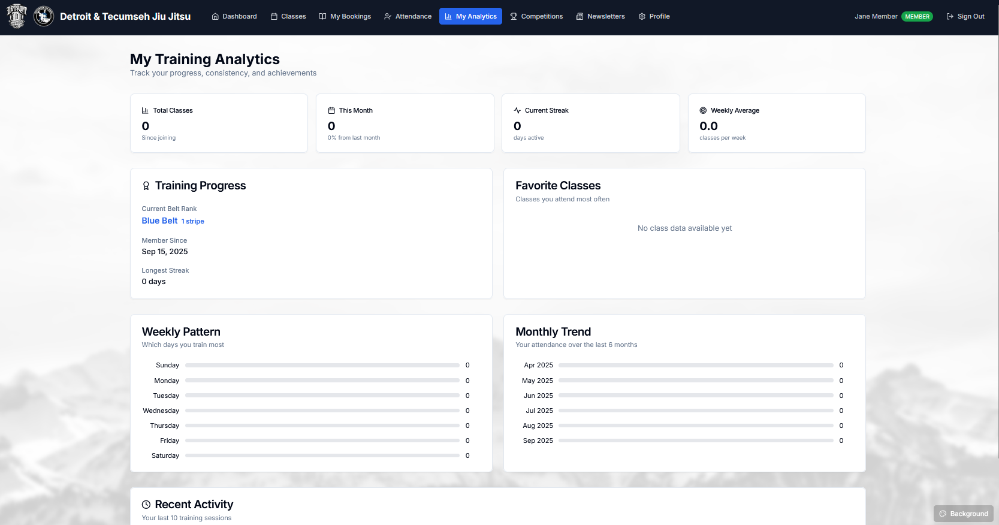 Comprehensive student listing with search functionality, belt ranks, and member status. Admins can manage all student records from this interface.
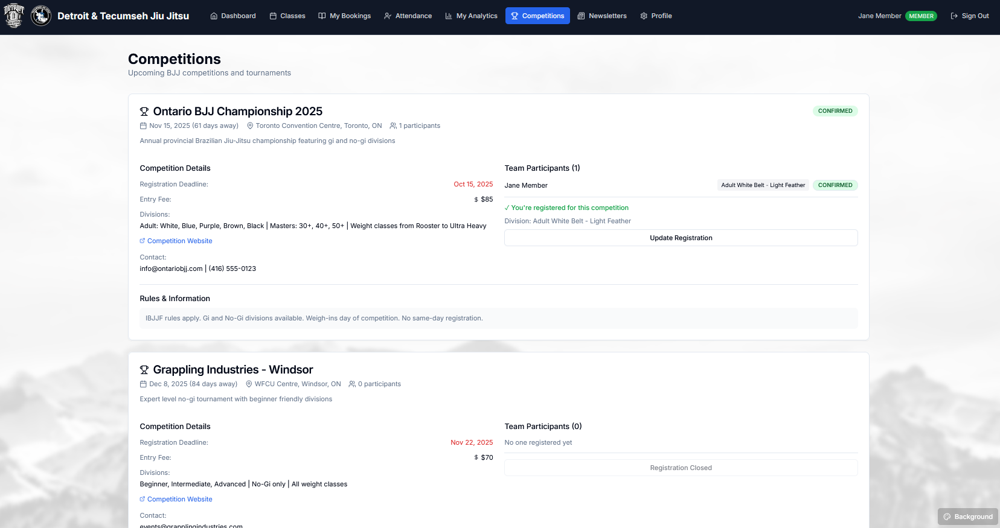 Detailed student profile page showing personal information, progress tracking, and account management options.
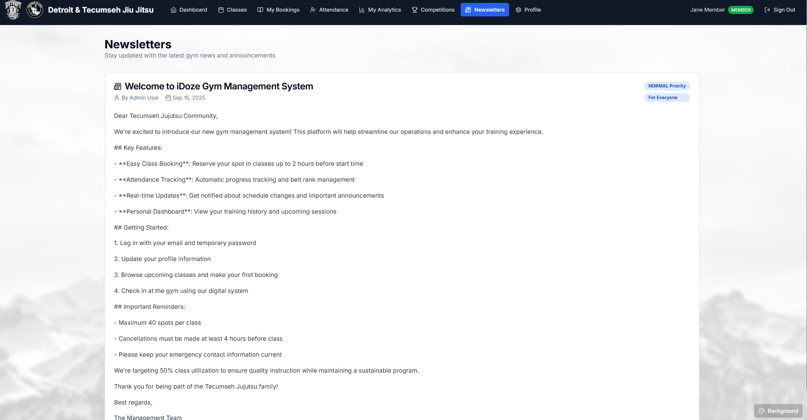 Belt promotion interface allowing instructors to advance students through belt ranks with proper tracking and documentation.
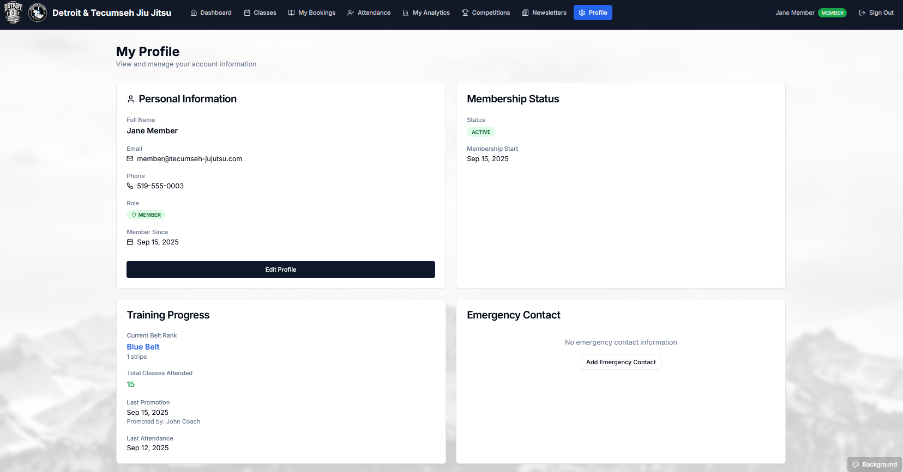 Comprehensive analytics dashboard showing key metrics, class utilization, and business insights for gym management.
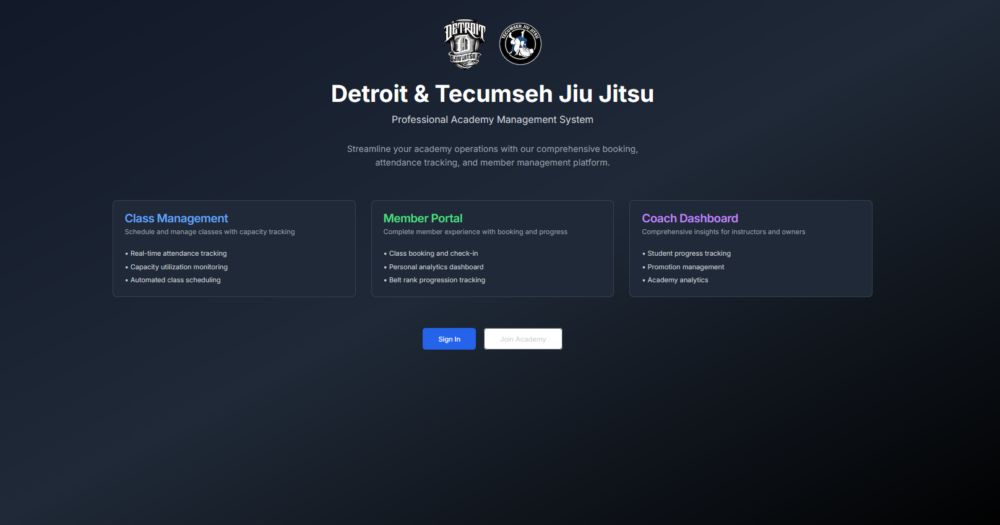 In-depth analytics with charts and graphs showing attendance patterns, member engagement, and performance metrics.
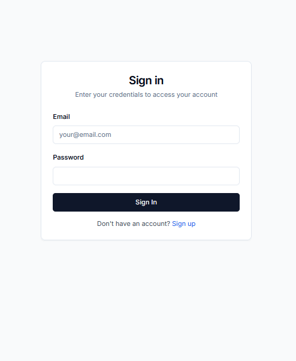 Competition management interface for organizing tournaments and tracking participant registrations.
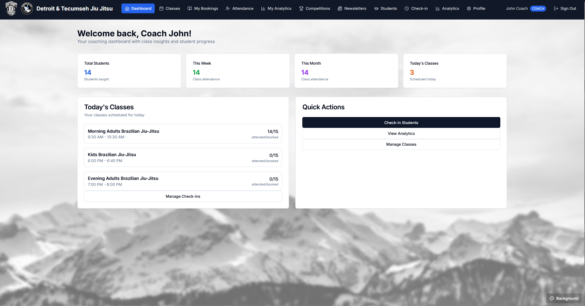 Main competition dashboard showing upcoming events, participant lists, and competition management tools.
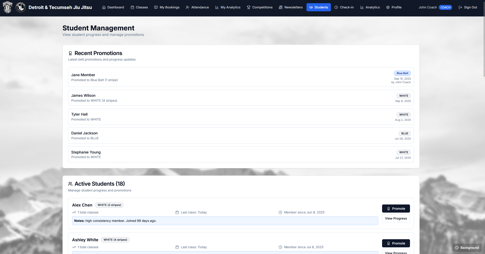 Streamlined check-in system for coaches to mark student attendance during classes with quick search and selection.
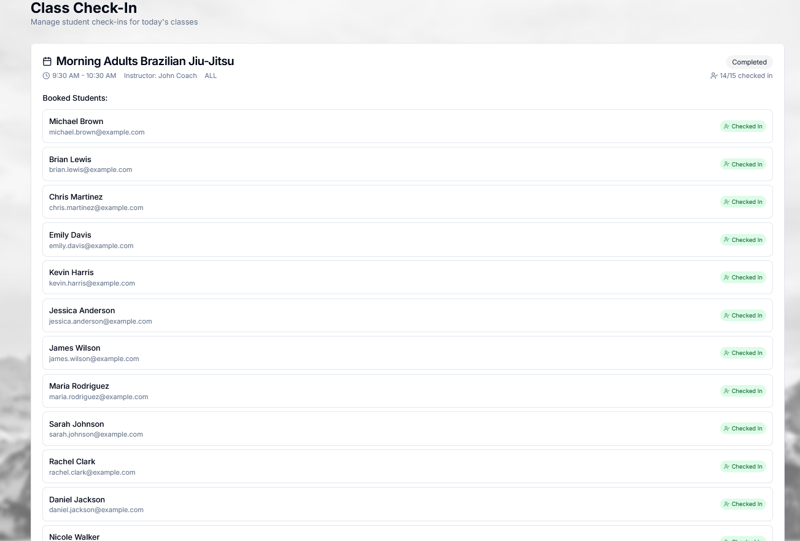 Comprehensive attendance tracking showing historical records, patterns, and member participation statistics.
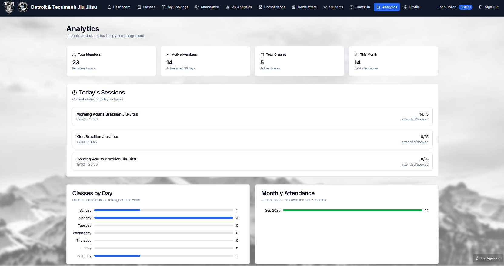 Newsletter creation and management system for gym-wide communications and announcements.
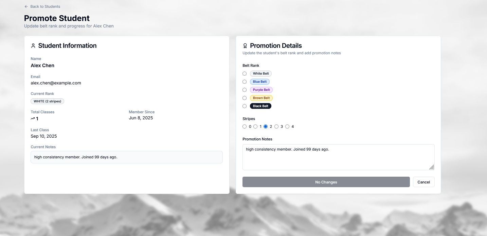 Archive of published newsletters with easy access to past communications and announcements.
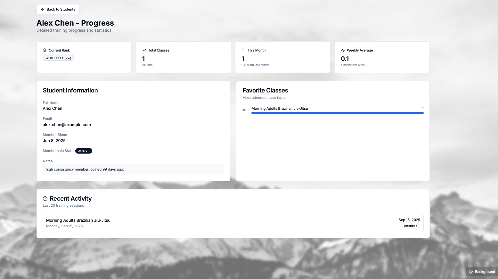 Personal profile management where users can update their information, emergency contacts, and account settings.
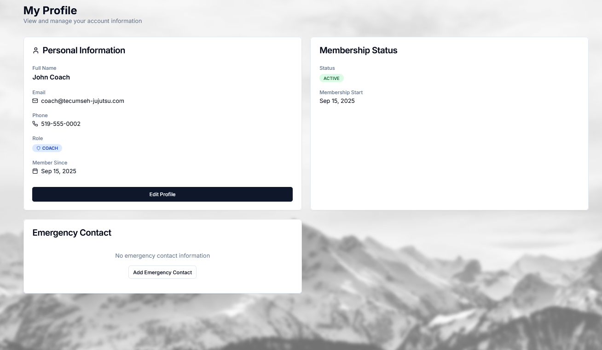 Emergency contact management interface ensuring student safety with up-to-date contact information.
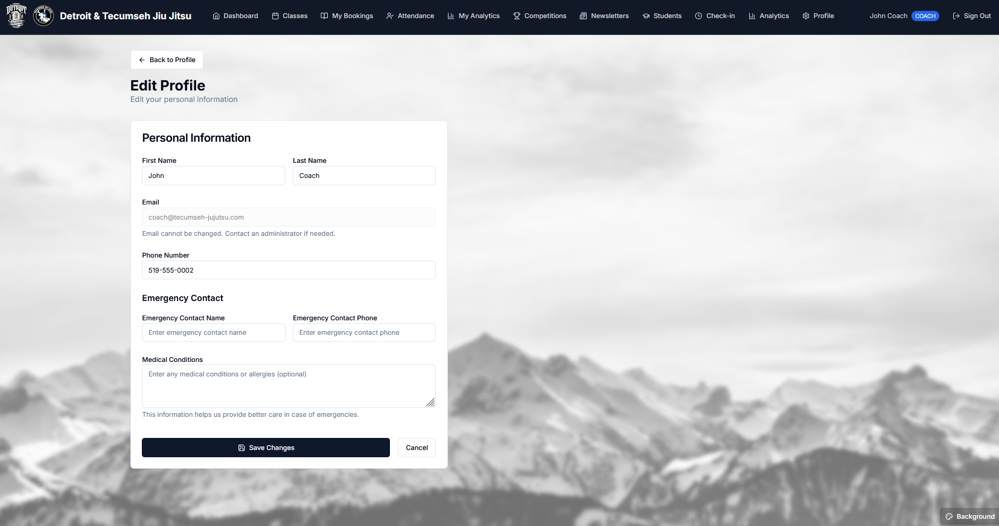 Custom background selection feature allowing users to personalize their dashboard experience with preset images or custom uploads.
The interface prioritizes ease of use with intuitive navigation, clear visual hierarchy, and efficient workflows. Each screen is designed to minimize clicks while maximizing functionality, ensuring both new and experienced users can quickly accomplish their tasks.
All screenshots captured from the live development environment showcasing the complete feature set of the iDoze Jujutsu Management System.